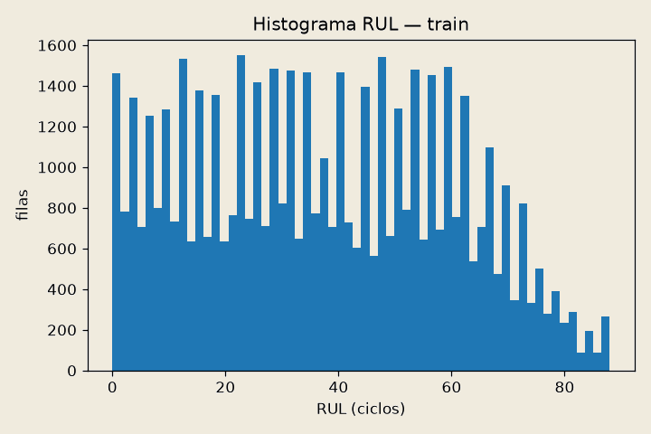

1.185 nulos, todos en T30 (~1,8 %): MAR con patrón físico, dropout de sonda en crucero alto. Imputación ffill causal por unidad y mediana de train solo para el primer NaN.
Un motor se calienta porque se rompe o porque el avión sube a tope. Si no se separan las dos cosas, el modelo aprende pilotaje en vez de desgaste.
Un Ridge por sensor —14— sobre un polinomio de grado 2 en alt · Mach · TRA · T2. Lo que sobra es el residuo: la degradación.
Solo con los motores 2·5·10·18·20. Ningún otro participa: es la línea de la que cuelga todo lo demás.
19 canales escalados para la red y 93 features de resumen para el árbol. El mismo residuo, dos vistas.

La degradación es lo que queda cuando se resta el régimen.
XGBoost gana con 8,217, pero el techo es el grano: una fila no ve la secuencia.
cycle pesa 20,8 en la permutación; el resto de variables, menos de 6,2. El modelo se apoya en el reloj.
Por eso el siguiente paso no es «otro clasificador»: es cambiar el contrato de entrada.

Residuo del híbrido: sesgo +0,369 ciclos, rango −14,8 a +9,5. El 58,8 % de las ventanas se pasa de RUL —el lado que la NASA castiga— y el 4,3 % falla más de 10 ciclos.


Las dos ramas miran el mismo desgaste desde ángulos distintos: el reloj y la temperatura de salida. El meta las concilia.

Telemetría nueva o un caso de la caché. El bundle devuelve RUL y banda conformal.
La regla lee L_inf, aplica prioridad y escribe el motivo. La pantalla muestra el SHA del artefacto.
La decisión viaja al webhook de n8n. El caso malo devuelve SIN_DECISION con motivo, sin romper la app.
Un único flujo: telemetría → RUL → regla → decisión → n8n.